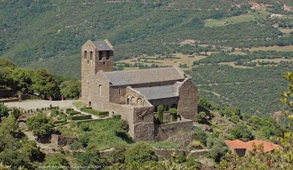

Prieuré
de Serrabone
Boule-d'Amont


⟹ Abbayes & Édifices Sacrés ⟸
Perché au-dessus de la vallée du Boulès, le prieuré de Serrabone — « serra bona », la bonne montagne — s'enracine dans un paysage qui était beaucoup plus peuplé au Moyen Âge qu'aujourd'hui. Une église paroissiale dédiée à la Vierge est mentionnée en 1069. Elle dessert alors les communautés rurales dispersées dans ce secteur des Aspres et constitue le noyau du futur établissement canonial.

En 1082, dans le contexte de la réforme grégorienne, des religieux s'organisent en communauté régulière et élisent un prieur. Ils suivent la règle de saint Augustin : contrairement à des moines retirés du monde, ces chanoines vivent en communauté tout en assurant le service paroissial et l'administration des sacrements. La fondation bénéficie de l'appui du vicomte de Cerdagne-Conflent et de puissantes familles seigneuriales locales. Les sources indiquent qu'à l'origine la petite communauté a pu comprendre des hommes et des femmes.
La première église, étroite et couverte d'un berceau, est profondément transformée durant la première moitié du XIIe siècle. On lui ajoute un collatéral nord, un transept, un nouveau chevet, un clocher et les espaces nécessaires à la vie communautaire. Le relief abrupt impose un cloître inhabituel, réduit essentiellement à une galerie méridionale ouverte sur la montagne. Ces agrandissements sont solennellement consacrés le 25 octobre 1151 en présence d'autorités ecclésiastiques.
C'est dans cette campagne qu'est réalisée la célèbre tribune-jubé en marbre rose, l'un des chefs-d'œuvre de l'art roman catalan. Cette clôture monumentale séparait l'espace réservé aux chanoines de celui des fidèles. Colonnes, chapiteaux et panneaux sculptés déploient un extraordinaire répertoire de lions, aigles, griffons, centaures, végétaux et figures sacrées. Les parentés stylistiques avec Saint-Michel-de-Cuxa témoignent de la vitalité des ateliers de sculpture du Roussillon au XIIe siècle.
À partir du XIVe siècle, Serrabone entre dans une longue période de déclin. Le peuplement des montagnes diminue, les ressources du prieuré s'amenuisent et la discipline de la vie commune se relâche. Des textes tardifs évoquent les difficultés de la communauté et l'abandon progressif des usages réguliers. En 1592, dans le cadre d'une réorganisation des établissements augustiniens, le prieuré est supprimé ; ses biens sont ensuite rattachés au nouveau diocèse catalan de Solsona.
L'église Sainte-Marie conserve néanmoins une fonction paroissiale pendant encore plusieurs générations. Avec le dépeuplement de Serrabone, les bâtiments conventuels sont peu à peu abandonnés et parfois utilisés à des fins agricoles. En 1819, une partie de la nef s'effondre ; en 1822, la commune de Serrabone elle-même est supprimée. Le monument paraît alors menacé de disparition.
Le regard porté sur l'art médiéval change cependant au XIXe siècle. Prosper Mérimée visite Serrabone en 1834 et le site est reconnu très tôt comme un monument à sauvegarder. Des travaux de consolidation commencent dès les années 1830, puis se poursuivent par campagnes. Au début du XXe siècle, la famille Jonquères d'Oriola, propriétaire du lieu, participe activement à son sauvetage ; la tribune, longtemps masquée ou encombrée, est progressivement dégagée et remise en valeur.
Les restaurations du XXe siècle permettent de restituer la lisibilité de l'église, du cloître et des bâtiments. Le prieuré devient en 1968 propriété du Département des Pyrénées-Orientales, qui poursuit depuis lors sa conservation, son étude et son ouverture au public. Entouré d'un vaste espace naturel protégé, Serrabone offre aujourd'hui un témoignage exceptionnel sur la vie d'une petite communauté canoniale médiévale et sur l'âge d'or de la sculpture romane en Roussillon.
Repères documentaires : synthèse fondée notamment sur la documentation du Département des Pyrénées-Orientales, les publications de la DRAC Occitanie et la notice Mérimée du ministère de la Culture.
Fondé sur la règle de saint Augustin, le prieuré rassembla pendant plus de cinq siècles une communauté de chanoines réguliers, davantage tournés vers la prédication et l'accueil que les moines bénédictins des grandes abbayes voisines.
La bonne montagne, disaient les Catalans, pour un lieu qui semble sculpté dans le silence des Aspres.
— Origine du nom catalan Serra BonaAujourd'hui propriété du département, Serrabone conjugue patrimoine roman et nature préservée : le jardin méditerranéen aménagé autour du prieuré et les sentiers des Aspres environnants en font une étape autant contemplative que naturaliste.
Boule-d'Amont, village voisin et son église paroissiale Saint-Saturnin.
Le massif des Aspres, terrain de randonnée entre forêts de chênes verts et ruisseaux.
Bouleternère, point de passage sur la route menant au prieuré.
L'abbaye Saint-Michel-de-Cuxa, dont les ateliers de sculpture sont liés à ceux de Serrabone.